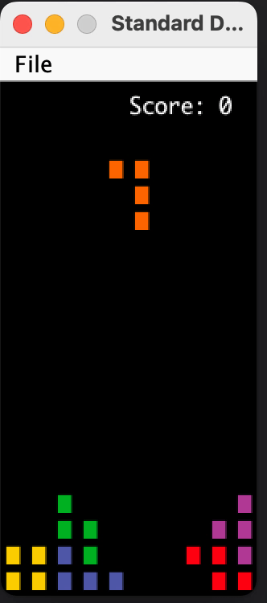

实验 10：俄罗斯方块（可选）¶
FAQ¶
每个作业的顶部都会链接一个常见问题页面，你也可以在 URL 末尾添加 “/faq” 来访问。本实验 10 的常见问题页面位于此处。
简介¶
本实验将帮助你入门项目的第二阶段：交互性。在做本实验时，你不一定需要完成第一阶段，但如果还没开始，我们强烈建议你着手准备！
在本实验中，你需要思考一些想法（或实现方式）如何应用到项目 3 中。它还会帮助你更熟悉项目所需的实用工具。
Warning
本实验提供了很多辅助方法 —— 你无需了解每个方法的具体作用，但请注意，在实验过程中你需要调用其中一些方法。你还会用到一个库中的方法，请务必通读相关文件，了解你所使用的内容！提醒一下，坐标 (0, 0) 代表游戏板的左下角。
可选说明¶
请注意，本实验是可选的，但强烈建议你完成，以帮助你更好地完成项目！
俄罗斯方块（Tetris）¶
为了准备制作游戏，我们将构建俄罗斯方块！如果你对俄罗斯方块不太熟悉，它是一款益智视频游戏，玩家需要在不同形状的方块（称为 “四格骨牌”）下落时 “消行”。玩家可以根据需要移动和旋转这些方块来完成行消除 —— 一旦有行被消除，这些行就会消失，玩家得分。当未消除的行堆积到游戏板顶部时，游戏结束。
你所有的实现工作都将在Tetris.java中完成。我们还提供了另外三个文件：
Tetromino.java：包含你将使用的游戏方块Movement.java：包含方块旋转和移动的逻辑BagRandomizer.java：帮助随机生成要出现的方块
你无需直接在这三个文件中编写代码，但这些类会在Tetris.java 中被使用（或将要被使用）。我们还会用到StdDraw库来实现一些功能，例如用户输入。你会发现这个库对项目 3 非常有用。
虽然我们希望做出一个能运行的Tetris.java游戏，但应该将其分解为更小的步骤，而不是一次性解决所有问题。游戏大致可以分为以下步骤：
- 创建游戏窗口。
- 随机生成一个供玩家控制的方块，并显示当前分数。
- 根据玩家的输入更新方块的移动。
- 当方块无法再移动时，检查是否有行需要消除，更新分数，并重新生成一个新方块。
- 重复步骤 2-4，直到游戏结束（当未消除的行到达顶部时）。
一般来说，良好的编码实践是先构建具有明确用途的小型程序，然后用这些基础程序组合出更复杂的方法。如果你查看 Tetris.java，会发现它包含许多辅助方法，用于构建更复杂的游戏机制 —— 在项目 3 中，强烈建议将游戏逻辑分解为独立的方法。这会让你的开发路径更清晰，也更容易为单元测试拆分逻辑。
实验结束时，你将做出一个功能如下的游戏：

如果你想自己玩这个游戏，可以在这里找到它。
StdDraw¶
如前所述，我们将使用 StdDraw 库。StdDraw 是一个提供基础绘图和用户输入捕获功能的库。开始前请查看其 API 文档 —— 其中的一些方法不仅对本实验有用，对项目 3 也至关重要。
运行游戏¶
要运行游戏，需运行 Tetris.java 中的 main 方法。目前，运行后只会显示一个黑框。随着你实现更多方法，可以通过这个方法验证游戏逻辑的正确性。
方法概述¶
由于所有实现工作都在 Tetris.java 中进行，你需要完成几个方法才能让游戏运行起来。
Info
如前所述，请务必通读 Tetris.java、Tetromino.java 和 Movement.java，熟悉本实验中的辅助方法。虽然你不一定需要理解每个辅助方法的工作原理（这就是抽象的意义！），但其中一些很可能对你的实现有帮助，因此请仔细阅读，了解有哪些可用的工具。
updateBoard¶
该方法根据用户输入更新游戏板。第一步是检查用户是否有输入，若有则获取输入。StdDraw API 中的一些方法对实现这部分很有用，可参考 hasNextKeyTyped 和 nextKeyTyped。
下一步是实现特定按键对应的操作。用户可输入 5 个键：
a：将当前方块向左移动一格s：将当前方块向下移动一格d：将当前方块向右移动一格q：将当前方块向左旋转 90 度w：将当前方块向右旋转 90 度
建议查看 Movement.java 中提供的辅助方法，确定可以调用哪些方法来移动或旋转方块（你无需自己实现任何移动逻辑，只需理解这些辅助方法的作用即可）。
代码中已提供一个 Movement 实例供你使用。
Task
根据上述描述完成 updateBoard 方法。提醒一下，务必通读 Movement.java 和 StdDraw 的 API！
incrementScore¶
这是一个辅助方法，用于更新分数。玩家的分数根据单次消除的行数增加，具体规则如下：
- 消除 1 行：加 100 分
- 消除 2 行：加 300 分
- 消除 3 行：加 500 分
- 消除 4 行：加 800 分
Task
完成 incrementScore 方法，使玩家分数按上述规则增加。
clearLines¶
在俄罗斯方块中，当一行被填满时，需要更新分数并消除该行。该方法用于在方块落定后检查是否有行需要消除。实现时需考虑：
- 由于不确定哪些行会被填满（如果有的话），需要检查整个游戏板
- 如何判断一行是否被填满？特别是如何判断一行未被填满？
- 找到被填满的行后，需要消除该行。
- 消除一行后，其上方所有行需下移。
- 用变量
linesCleared记录消除的行数。 - 最后，根据消除的行数更新分数，可调用你实现的辅助方法。
Task
完成 clearLines 方法，检查消除的行数并相应更新游戏板。注意，游戏板会作为参数传入，因此请务必使用参数 tiles（否则可能影响自动评分）。
runGame¶
这是主游戏逻辑所在的地方。代码框架中已留下注释帮助你入门。需注意几点：
- 确保游戏在结束前不会退出或停止（提示：如何让游戏持续运行？）。
- 如果当前方块无法下移或从当前位置移动，会被设为
null。这部分逻辑已实现，你无需处理。 - 当方块落定且无法移动后，需检查是否有行需要消除，并生成新方块。
- 需根据用户输入更新游戏板，并渲染这些变化。
除了你已实现的方法，你可能会用到以下相关辅助方法：
spawnPiece：在游戏板上生成一个方块，并将当前方块设为随机选择的方块isGameOver：检查游戏是否结束clearLines：检查需要消除的行，并根据消除的行数更新分数（确保将游戏板传入clearLines）updateBoard：检查玩家的移动，并根据用户输入更新游戏板renderBoard：渲染游戏板状态（在用户输入和消除行后调用）
Task
完成 runGame 方法。
renderScore¶
此时，如果你运行游戏，会发现缺少了一些东西 —— 分数！因为我们还未显示分数。完成 renderScore 方法以显示分数，这样你可以验证消除行时分数是否正确更新。
步骤如下：
- 将文本颜色设为白色（RGB 值为 (255, 255, 255)），使分数在黑色背景上可见。
- 分数应显示在坐标 (7, 19) 处。
- 绘制完成后，确保渲染分数！
以下是 StdDraw 库中可能有用的方法（你可能不会全部用到，但可参考）：
Task
完成 renderScore 方法，运行游戏检查分数是否显示。
Gradescope 的自动评分器并非面面俱到，但你可以通过以下方式检查游戏是否正常运行：
- 方块可通过
a、s、d键分别向左、向下、向右移动，通过q、w键分别向左、向右旋转。 - 其他按键（如
h）不应影响游戏板。 - 分数在游戏过程中持续显示，不会消失。
- 方块堆叠或落地时不会穿透。
重申一下，需要实现的方法总结如下：
updateBoard：根据用户输入更新游戏板incrementScore：根据消除的行数更新分数clearLines：检查并消除填满的行runGame：实现运行游戏的主逻辑renderScore：显示分数
致谢¶
4 位助教参与了本实验的制作（Noah Adhikari、Erik Nelson、Omar Yu 和 Jasmine Lin）。